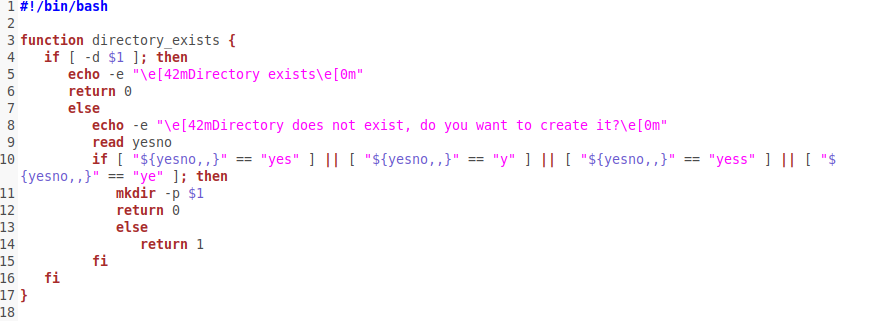

Project 3 -Backup BASH Script
Created by Ethan A
My Bash Backup code
You must place functions at the top of a bash script. This function will check and see if a directory exists. If not, it will create a new one if you want. You can only return numbers 0-9, and can get this returned value by using the variable $?

Ths tells you the date using both the DATE and CAL commands. I also colored the text by using the -e option for echo. You just have to insert \e[#m where # is a number at the beginning of the text
You can view your cpu data by using these commands. This doesn't relate to the purpose of this bash script, so I made it so you can choose to view them or not.
Alright, now we start asking for inputs, like what directory to backup, where to back it up to, and what to name the backup. I use my function to see if the inputed directory exists. It will keep asking for a valid input until it receives one.
Now we actually create the .tar backup file, and it will display the contents of the backup folder. That is the end of the program. You can get the file here
 |
West Ada School District |
 |
I go to Rocky Mountain High School |
 |
I go to Centennial High School for my Computer Science and Web Design classes |